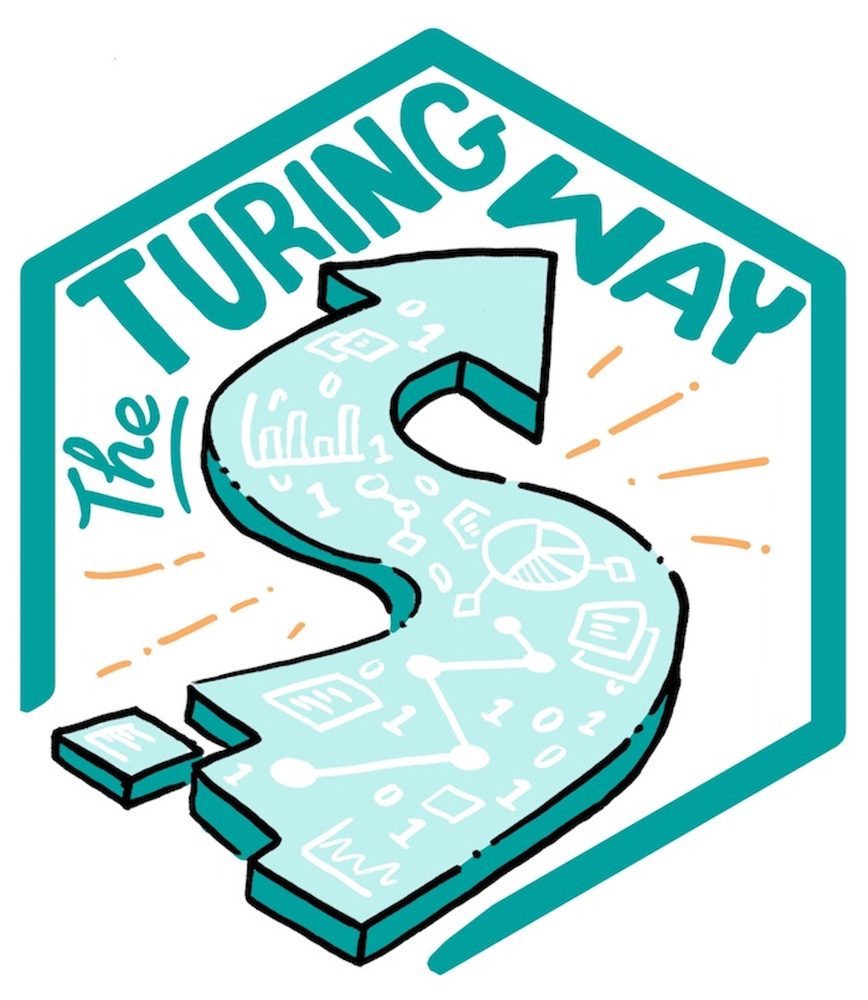

Data Management and Reproducibility (CTCMS Symposium 2023)
A Buffet Tasting
Shern Tee
The University of Queensland
3/11/23
About Me
Workshop Goals
- Define data management and reproducible research
- Identify broad principles for data management and reproducibility
- Find something to work on today!
Data Management and Reproducibility
This illustration is created by Scriberia with The Turing Way community. Used under a CC-BY 4.0 licence. DOI: 10.5281/zenodo.3332807
(Not) Managing Your Data
Does your hard drive look like this? (Mine does.)
This illustration is created by Scriberia with The Turing Way community. Used under a CC-BY 4.0 licence. DOI: 10.5281/zenodo.3332807
Every Researcher’s Nightmare
When he investigated, Chang was horrified to discover that a homemade data analysis program had flipped two columns of data, inverting the electron-density map from which his team had derived the final protein structure. Unfortunately, his group had used the program to analyze data for other proteins.
Definitions of Reproducibility
![A grid showing four definitions of reproducibility as researchers pouring components into machines to reproduce a landscape. Top left, 'reproducible' research involves using the same data and same analysis to get the same results; top right, 'replicable' research involves using different data in the same analysis to get meaningful results; bottom left, 'robust' research involves using same data with different analyses to get consistent results; bottom right, 'generalisable' research involves using different data with different analyses to build a complex and complete picture.](img/reproducible-definition-grid.svg)
This illustration is created by Scriberia with The Turing Way community. Used under a CC-BY 4.0 licence. DOI: 10.5281/zenodo.3332807
Benefits of Reproducibility

Benefits of reproducibility by The Turing Way (link), DOI: 10.5281/zenodo.7684733.
Barriers to Reproducibility
We have a habit in writing articles published in scientific journals to make the work as finished as possible, to cover all the tracks, to not worry about the blind alleys or to describe how you had the wrong idea first, and so on.
So there isn’t any place to publish, in a dignified manner, what you actually did in order to get to do the work, although, there has been in these days, some interest in this kind of thing.
Reflection Exercise 1
What barriers to good data management and reproducibility have you encountered?
Navigate to https://hackmd.io/@srtee/ctcms-2023-repro/edit …
HackMD
A Buffet Tasting
There are many paths toward reproducible research, and you shouldn’t try to change all aspects of your current practices all at once. Identify one weakness, adopt an improved approach, refine that a bit, and then move on to the next thing.
This illustration is created by Scriberia with The Turing Way community. Used under a CC-BY 4.0 licence. DOI: 10.5281/zenodo.3332807
Buffet image from Unsplash (link)
Resources and Communities

This talk was inspired by a TTW Workshop on “Reproducible, Open and FAIR Research” (Karoune, Zormpa, and Lee Steele 2023) and Dan Katz’s “Research Reproducibility” talk (Katz 2023).
Overlapping concepts
- Open Science
- FAIR Principles
- Findable, Accessible, Interoperable, Reusable
- Data Management Plan
Scheffler et al. (2022)
Five Steps: ABCDE
This illustration is created by Scriberia with The Turing Way community. Used under a CC-BY 4.0 licence. DOI: 10.5281/zenodo.3332807
Five Steps
Automate
Capture what you do so you can repeat it in one step – then capture multiple steps in one!
Backup
Keep secure data copies in multiple locations
Control
Track changes in what you do and automate with version control
Document
Organize and name things well
Export
Capture your environment, licence your data, and make your work citeable
A Typical Computational Workflow
Automate
Backup
Control
Document
Export
Where you are will influence where you can start!
Where To Start (For Example!)
Automate
Backup
Control
Document
Export
Where you are will influence where you can start!
Backup
Webcomic by The Upturned Microscope (link)
The 3-2-1 Rule
3 copies of data, with
2 on different media on-site and
1 backup copy off-site
Example
Work desktop + external HDD + RDM or GitHub (small files only!)
Make a regular plan! Helpful software: Rsync, Nextcloud, Syncthing
Synergizes with version control.
Webcomic by The Upturned Microscope (link)
Document
This illustration is created by Scriberia with The Turing Way community. Used under a CC-BY 4.0 licence. DOI: 10.5281/zenodo.3332807
Eight Step Filename Convention
- What files will this cover?
- What metadata am I tracking?
- Will I encode or abbreviate the metadata?
- What order should I list metadata in?
- What separator characters go between metadata?
- Will I track different versions of files?
- Now write down your naming convention pattern and some examples …
- … and save it in a
NAMES.mdin your project folder.
(Briney 2020), CC-BY 4.0
Eight Step Filename Convention
NAMES.md
_Files_: solvent trajectory DCD files
_Metadata_: potential difference, non-equilibrium force, trajectory date
_Encoding_: "V00" = 0.0 volts (2-pad),
"F040" = 40 LAMMPS force units (3-pad), ISO8601 dates (YYYYMMDD)
_Order_ and _separator_: volts, force, date, separated with _
_Versions_: maybe during postprocessing I will combine
dated partial trajectories into a "full" trajectory?
_Final convention_:
"V"vv_"F"fff_YYYYMMDD.dcd *or* "V"vv_"F"fff_full.dcd
_Examples_:
V00_F040_20230415.dcd
(0.0 V, force 40 LAMMPS units, date 2023-04-15)
V25_F100_full.dcd
(2.5 V, force 100 LAMMPS units, combined from over multiple dates)(Briney 2020), CC-BY 4.0
How To Name Files
.
NO:
myabstract.docxPictures of Space.jpgfigure 1.pngMwpktrimportantfinalFINAL.pdf
YES:
2021-02-16_ctcms-abstract.docxbetter-pictures-of-space.jpgfig01_scatterplot-coffee-vs-paper-length.png1986-01-28_challenger-o-rings_raw-data.txt
Three Principles: Good (File) Names Are
- Machine readable: “glob-friendly”
- Human readable: include a “slug”
fig01_intro-pic.png,fig02_charge-vs-v.png- underscores for machines, dashes for humans
- Easily sorted: list metadata in search-y order
- Pad numbers and use YYYY-MM-DD dates (ISO 8601)
Three Principles: Good (File) Names Are
- Easily sorted: list metadata in search-y order
- Pad numbers and use YYYY-MM-DD dates (ISO 8601)
ISO dates, done right:
Sorted order:
2023-03-11_traj.dcd
2023-03-14_traj.dcd
2023-04-01_traj.dcd
2023-04-11_traj.dcd
Whoops!
Sorted order:
Apr11_traj.dcd
Apr1_traj.dcd
Mar11_traj.dcd
Mar14_traj.dcd
...
Sorted order:
traj_1-4.dcd
traj_11-3.dcd
traj_11-4.dcd
traj_14-3.dcd
...
.
Padding numbers, done right:
Sorted order:
01_read-trajectories.py
02_calc-msd.py
...
10_final-figs.py
Whoops!
Sorted order:
10_final-figs.py
...
1_read-trajectories.py
2_calc-msd.py
...
Directory Structures
The “GIN-Tonic” research folder structure standard (Colomb et al. 2021). See YODA or Cookiecutter as alternatives.
Automate
This illustration is created by Scriberia with The Turing Way community. Used under a CC-BY 4.0 licence. DOI: 10.5281/zenodo.3332807
Automating (and simplifying) single steps
Goal: Capture a procedure and make it repeatable in a simple, short step
- Get a terminal
- WSL is a fully-featured Linux environment in Windows!
- Swap graphical-only for text-based procedures
In future, you might not have to choose …
From Graphical-Only to Text-Based
(P): Python package
| Activity | Graphical | Text-based |
|---|---|---|
| Documents | MS Word | LaTeX, Markdown, Quarto |
| Tables | MS Excel | Awk, (P) NumPy, (P) Pandas |
| Graphs | MS Excel | (P) Matplotlib, Gnuplot, RStudio |
| Presentations | MS PowerPoint | LaTeX Beamer, Quarto |
Integrated Development Environments (IDEs), like Spyder and VSCode, give you the best of all worlds: text-based inputs and graphical outputs
and good practice for your decaying mouse-pointer skills
Automating Plots
Plotting with Python in the Spyder IDE. Python lets me generate multiple plots in a single for loop; you can (just about) see their consistent styling (far right vertical region).
Simplifying Presentations
Editing this presentation with Quarto in the VSCode IDE. No more worrying about getting that picture exactly centered, or clicking through multiple directories to find it!
Automating a workflow
After automating individual steps, you can fit them together into an automated workflow!
This illustration is created by Scriberia with The Turing Way community. Used under a CC-BY 4.0 licence. DOI: 10.5281/zenodo.3332807
Tools to try: (Python) Snakemake, FireWorks, Signac, make (TTW tutorial)
Automating a workflow
Signac example:
project.py
lmp="$HOME/.local/bin/lmp_mpi"
@Project.pre.isfile('start.data')
@Project.post.isfile('restart.file.1')
@Project.operation(cmd=True)
def first_run(job):
return f'{lmp} -in lammps.input'
' -var if_restart 0 ... '
@Project.pre.isfile('restart.file.1')
@Project.post.isfile('final.data')
@Project.operation(cmd=True)
def restart_run(job):
return f'{lmp} -in lammps.input'
' -var if_restart 1 ... 'Readable and Reusable Code

Learn to write readable code, and even better, code that is easily reusable in future!
This illustration is created by Scriberia with The Turing Way community. Used under a CC-BY 4.0 licence. DOI: 10.5281/zenodo.3332807
Control and Export
This illustration is created by Scriberia with The Turing Way community. Used under a CC-BY 4.0 licence. DOI: 10.5281/zenodo.3332807
Version Control
Change things quickly knowing you can always retrieve past versions! This is also an important pre-requisite for continuous integration.
This illustration is created by Scriberia with The Turing Way community. Used under a CC-BY 4.0 licence. DOI: 10.5281/zenodo.3332807
Git In One Slide

For files in your working directory that you care about, you add them to Git’s staging area. To save a version of your staging area, you commit it to your local repository, which you can push to a remote repository (like GitHub) for backup and sharing. You can clone a remote repository to your local repository and pull updated changes from the remote; you can then merge changes into your working directory, checkout other commits to try out other versions, and revert or reset to try fixing trickier issues.
Image from Cosima Meyer’s blog post, which is also a great short guide.
Export your work
Sharing your computational environment:
- Python:
python -m pip freeze > requirements.txtorconda env export > environment.yml - More complex requirements:
- containers (Docker, Singularity / Apptainer), or
- reproducible build systems (EasyBuild, Spack)
- Jupyter Notebooks can “showcase” code with BinderHub or
nbdev.
Hosting your data online:
- See PLOS ONE’s list of recommended repositories, and ask your university! (for example UQ’s eSpace)
- Very important to get a DOI for citability!
Licensing your work: see last section of Dan Katz’s slides (Katz 2023).
Reflection Exercise 2
What one thing would you like to practice in the coming month?
Navigate to https://hackmd.io/@srtee/ctcms-2023-repro/edit …
HackMD
All the best on your reproducibility journey!
Acknowledgements

References
Data Management and Reproducibility (CTCMS Symposium 2023)
Briney, Kristin A. 2020. “File Naming Convention Worksheet.” https://resolver.caltech.edu/CaltechAUTHORS:20200601-161923247; CaltechAUTHORS. https://doi.org/10.7907/894q-zr22.
Broman, Karl. 2023. “Initial Steps Towards Reproducible Research.” https://kbroman.org/steps2rr/.
Bryan, Jenny. 2015. “Naming Things (Reproducible Science Workshop).” https://speakerdeck.com/jennybc/how-to-name-files.
Colomb, Julien, Thorsten Arendt, Keisuke Sehara, and The Gin-Tonic team. 2021. “Towards a Standardized Research Folder Structure.” https://genr.eu/wp/towards-a-standardized-research-folder-structure/; Generation Research. https://doi.org/10.25815/WCY6-M233.
Feynman, Richard P. 1965. “Nobel Lecture.” https://www.nobelprize.org/prizes/physics/1965/feynman/lecture/; Nobel Prize Outreach AB 2023.
Karoune, Emma, Eirini Zormpa, and Anne Lee Steele. 2023. “The Turing Way Workshop: Reproducible, Open and FAIR Research.” Zenodo. https://doi.org/10.5281/zenodo.7684733.
Katz, Daniel S. 2023. “Research Reproducibility in Theory and Practice.” https://github.com/danielskatz/repro-fdtd1d/blob/master/Computational_Reproducibility.pdf.
Miller, Greg. 2006. “A Scientist’s Nightmare: Software Problem Leads to Five Retractions.” Science 314 (5807): 1856–57. https://doi.org/10.1126/science.314.5807.1856.
Scheffler, Matthias, Martin Aeschlimann, Martin Albrecht, Tristan Bereau, Hans-Joachim Bungartz, Claudia Felser, Mark Greiner, et al. 2022. “FAIR Data Enabling New Horizons for Materials Research.” Nature 604 (7907): 635–42. https://doi.org/10.1038/s41586-022-04501-x.